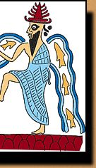

Ea (Enki)Sacred number: 40
Ea is attended by a god with two faces called Usmu (Isimud). Ea's symbols are the goat-fish and a sceptre with a ram's head. Many Mesopotamian myths emphasise the fun-loving and mischievous nature of Ea. One Sumerian myth is called 'Inanna and Enki' (the Sumerian names for Ishtar and Ea). In the beginning of this story, Enki controls the 'me' which are the rules of the universe. One day, Enki and Inanna get drunk and she tricks him into giving her the 'me'. When Enki realises that he has given the 'me' away, he tries to recover then from Inanna. But Inanna takes the 'me' back to her city. It is too late for Enki to get them back.
|
||||
 |
 | |||
|
|
||||